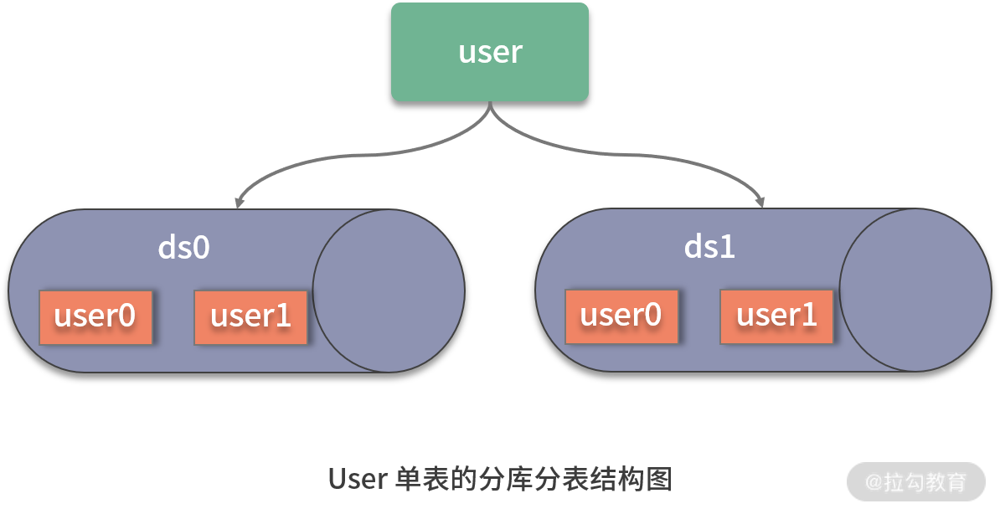

- 00 如何正确学习一款分库分表开源框架？.md.html
- 01 从理论到实践：如何让分库分表真正落地？.md.html
- 02 顶级项目：ShardingSphere 是一款什么样的 Apache 开源软件？.md.html
- 03 规范兼容：JDBC 规范与 ShardingSphere 是什么关系？.md.html
- 04 应用集成：在业务系统中使用 ShardingSphere 的方式有哪些？.md.html
- 05 配置驱动：ShardingSphere 中的配置体系是如何设计的？.md.html
- 06 数据分片：如何实现分库、分表、分库+分表以及强制路由？（上）.md.html
- 07 数据分片：如何实现分库、分表、分库+分表以及强制路由？（下）.md.html
- 08 读写分离：如何集成分库分表+数据库主从架构？.md.html
- 09 分布式事务：如何使用强一致性事务与柔性事务？.md.html
- 10 数据脱敏：如何确保敏感数据的安全访问？.md.html
- 11 编排治理：如何实现分布式环境下的动态配置管理？.md.html
- 12 从应用到原理：如何高效阅读 ShardingSphere 源码？.md.html
- 13 微内核架构：ShardingSphere 如何实现系统的扩展性？.md.html
- 14 分布式主键：ShardingSphere 中有哪些分布式主键实现方式？.md.html
- 15 解析引擎：SQL 解析流程应该包括哪些核心阶段？（上）.md.html
- 16 解析引擎：SQL 解析流程应该包括哪些核心阶段？（下）.md.html
- 17 路由引擎：如何理解分片路由核心类 ShardingRouter 的运作机制？.md.html
- 18 路由引擎：如何实现数据访问的分片路由和广播路由？.md.html
- 19 路由引擎：如何在路由过程中集成多种路由策略和路由算法？.md.html
- 20 改写引擎：如何理解装饰器模式下的 SQL 改写实现机制？.md.html
- 21 执行引擎：分片环境下 SQL 执行的整体流程应该如何进行抽象？.md.html
- 22 执行引擎：如何把握 ShardingSphere 中的 Executor 执行模型？（上）.md.html
- 23 执行引擎：如何把握 ShardingSphere 中的 Executor 执行模型？（下）.md.html
- 24 归并引擎：如何理解数据归并的类型以及简单归并策略的实现过程？.md.html
- 25 归并引擎：如何理解流式归并和内存归并在复杂归并场景下的应用方式？.md.html
- 26 读写分离：普通主从架构和分片主从架构分别是如何实现的？.md.html
- 27 分布式事务：如何理解 ShardingSphere 中对分布式事务的抽象过程？.md.html
- 28 分布式事务：ShardingSphere 中如何集成强一致性事务和柔性事务支持？（上）.md.html
- 29 分布式事务：ShardingSphere 中如何集成强一致性事务和柔性事务支持？（下）.md.html
- 30 数据脱敏：如何基于改写引擎实现低侵入性数据脱敏方案？.md.html
- 31 配置中心：如何基于配置中心实现配置信息的动态化管理？.md.html
- 32 注册中心：如何基于注册中心实现数据库访问熔断机制？.md.html
- 33 链路跟踪：如何基于 Hook 机制以及 OpenTracing 协议实现数据访问链路跟踪？.md.html
- 34 系统集成：如何完成 ShardingSphere 内核与 Spring+SpringBoot 的无缝整合？.md.html
- 35 结语：ShardingSphere 总结及展望.md.html
04 应用集成：在业务系统中使用 ShardingSphere 的方式有哪些？
在上一课时中，我详细介绍了 ShardingSphere 与 JDBC 规范之间的兼容性关系，我们知道 ShardingSphere 对 JDBC 规范进行了重写，并嵌入了分片机制。基于这种兼容性，开发人员使用 ShardingSphere 时就像在使用 JDBC 规范所暴露的各个接口一样。这一课时，我们将讨论如何在业务系统中使用 ShardingSphere 的具体方式。
如何抽象开源框架的应用方式？
当我们自己在设计和实现一款开源框架时，如何规划它的应用方式呢？作为一款与数据库访问相关的开源框架，ShardingSphere 提供了多个维度的应用方式，我们可以对这些应用方式进行抽象，从而提炼出一种模版。这个模版由四个维度组成，分别是底层工具、基础规范、开发框架和领域框架，如下图所示：

底层工具
底层工具指的是这个开源框架所面向的目标工具或所依赖的第三方工具。这种底层工具往往不是框架本身可以控制和管理的，框架的作用只是在它上面添加一个应用层，用于封装对这些底层工具的使用方式。
对于 ShardingSphere 而言，这里所说的底层工具实际上指的是关系型数据库。目前，ShardingSphere 支持包括 MySQL、Oracle、SQLServer、PostgreSQL 以及任何遵循 SQL92 标准的数据库。
基础规范
作为一个开源框架，很多时候需要兼容业界已经形成标准的基础性规范。换句话说，想要框架被其他开发人员所认可，就得要考虑开发人员目前在使用的基础规范。例如，如果设计一个与链路跟踪相关的开源框架，一般都需要兼容 OpenTracing 这一开放式分布式追踪规范。
对于 ShardingSphere 而言，所涉及的基础规范很明确，就是我们在上一课时中所详细阐述的 JDBC 规范。
开发框架
开源框架本身也是一个开发框架，但我们通常不会自己设计和实现一个全新的开发框架，而是更倾向于与现有的主流开发框架进行集成。目前，Java 世界中最主流的开发框架就是 Spring 家族系列框架。
ShardingSphere 同时集成了 Spring 和 Spring Boot 这两款 Spring 家族的主流开发框架。熟悉这两款框架的开发人员在应用 ShardingSphere 进行开发时将不需要任何学习成本。
领域框架
对于某些开源框架而言，也需要考虑和领域框架进行集成，以便提供更好的用户体验和使用友好性，区别于前面提到的适用于任何场景的开发框架。所谓领域框架，是指与所设计的开源框架属于同一专业领域的开发框架。 业务开发人员已经习惯在日常开发过程中使用这些特定于某一领域的开发框架，所以在设计自己的开源框架时，也需要充分考虑与这些框架的整合和集成。
对于 ShardingSphere 而言，领域框架指的是 MyBatis、Hibernate 等常见的 ORM 框架。ShardingSphere 对这领域框架提供了无缝集成的实现方案，熟悉 ORM 框架的开发人员在应用 ShardingSphere 进行开发时同样不需要任何学习成本。
接下来，我们就结合前面抽象的开源框架应用方式来具体分析 ShardingSphere 框架为开发人员提供了哪些开发上的支持。
数据库和 JDBC 集成
由于 ShardingSphere 最终操作的还是关系型数据库，并基于 JDBC 规范做了重写。所以在具体应用上相对比较简单，我们只要把握 JDBC 驱动和数据库连接池的使用方式即可。
JDBC 驱动
ShardingSphere 支持 MySQL、Oracle 等实现 JDBC 规范的主流关系型数据库。我们在使用这些数据库时，常见的做法就是指定具体数据库对应的 JDBC 驱动类、URL 以及用户名和密码。
这里以 MySQL 为例，展示了在 Spring Boot 应用程序中通过 .yaml 配置文件指定 JDBC 驱动的一般做法：
driverClassName: com.mysql.jdbc.Driver
url: jdbc:mysql://localhost:3306/test_database
username: root
password: root
数据库连接池
配置 JDBC 驱动的目的是获取访问数据库所需的 Connection。为了提高性能，主流做法是采用数据库连接池方案，数据库连接池将创建的 Connection 对象存放到连接池中，然后从池中提供 Connection。
ShardingSphere 支持一批主流的第三方数据库连接池，包括 DBCP、C3P0、BoneCP、Druid 和 HikariCP 等。在应用 ShardingSphere 时，我们可以通过创建 DataSource 来使用数据库连接池。例如，在 Spring Boot 中，可以在 .properties 配置文件中使用阿里巴巴提供的 DruidDataSource 类，初始化基于 Druid 数据库连接池的 DataSource：
spring.shardingsphere.datasource.names= test_datasource
spring.shardingsphere.datasource.test_datasource.type=com.alibaba.druid.pool.DruidDataSource
spring.shardingsphere.datasource.test_datasource.driver-class-name=com.mysql.jdbc.Driver
spring.shardingsphere.datasource.test_datasource.jdbc-url=jdbc:mysql://localhost:3306/test_database
spring.shardingsphere.datasource.test_datasource.username=root
spring.shardingsphere.datasource.test_datasource.password=root
而对于使用 Spring 框架的开发人员而言，可以直接在 Spring 容器中注入一个 DruidDataSource 的 JavaBean：
<bean id="test_datasource" class="com.alibaba.druid.pool.DruidDataSource" destroy-method="close">
<property name="driverClassName" value="com.mysql.jdbc.Driver"/>
<property name="url" value="jdbc:mysql://localhost:3306/ test_database"/>
<property name="username" value="root"/>
<property name="password" value="root"/>
</bean>
开发框架集成
从上面所介绍的配置信息中，你实际上已经看到了 ShardingSphere 中集成的两款主流开发框架，即 Spring 和 Spring Boot，它们都对 JDBC 规范做了封装。当然，对于没有使用或无法使用 Spring 家族框架的场景，我们也可以直接在原生 Java 应用程序中使用 ShardingSphere。
在介绍开发框架的具体集成方式之前，我们来设计一个简单的应用场景。假设系统中存在一个用户表 User，这张表的数据量比较大，所以我们将它进行分库分表处理，计划分成两个数据库 ds0 和 ds1，然后每个库中再分成两张表 user0 和 user1：

接下来，让我们来看一下如何基于 Java 原生、Spring 及 Spring Boot 开发框架针对这一场景实现分库分表。
Java 原生
如果使用 Java 原生的开发方式，相当于我们需要全部通过 Java 代码来创建和管理 ShardingSphere 中与分库分表相关的所有类。如果不做特殊说明，本课程将默认使用 Maven 实现包依赖关系的管理。所以，首先需要引入对 sharding-jdbc-core 组件的 Maven 引用：
<dependency>
<groupId>org.apache.shardingsphere</groupId>
<artifactId>sharding-jdbc-core</artifactId>
</dependency>
然后，按照 JDBC 的使用方法，需要创建 DataSource、Connection、Statement 等一系列接口的实现类，并通过这些类来完成具体的数据库访问操作。
我们先来看看创建 DataSource 的 Java 代码，这里构建了一个工具类 DataSourceHelper，基于 Druid 来获取一个 DruidDataSource：
public final class DataSourceHelper{
private static final String HOST = "localhost";
private static final int PORT = 3306;
private static final String USER_NAME = "root";
private static final String PASSWORD = "root";
public static DataSource createDataSource(final String dataSourceName) {
DruidDataSource result = new DruidDataSource();
result.setDriverClassName(com.mysql.jdbc.Driver.class.getName());
result.setUrl(String.format("jdbc:mysql://%s:%s/%s, HOST, PORT, dataSourceName));
result.setUsername(USER_NAME);
result.setPassword(PASSWORD);
return result;
}
}
由于在示例中，我们需要创建两个用户库，所以使用一个 Map 来保存两个数据源对象：
private static Map<String, DataSource> createDataSourceMap() {
Map<String, DataSource> result = new HashMap<>();
result.put("ds0", DataSourceHelper.createDataSource("ds0"));
result.put("ds1", DataSourceHelper.createDataSource("ds1"));
return result;
}
有了包含初始化 DataSource 对象的数据源集合之后，接下来就可以通过设计分库分表规则来获取目标 DataSource：
public DataSource dataSource() throws SQLException {
//创建分片规则配置类
ShardingRuleConfiguration shardingRuleConfig = new ShardingRuleConfiguration();
//创建分表规则配置类
TableRuleConfiguration tableRuleConfig = new TableRuleConfiguration("user", "ds${0..1}.user${0..1}");
//创建分布式主键生成配置类
Properties properties = new Properties();
properties.setProperty("worker.id", "33");
KeyGeneratorConfiguration keyGeneratorConfig = new KeyGeneratorConfiguration("SNOWFLAKE", "id", properties);
tableRuleConfig.setKeyGeneratorConfig(keyGeneratorConfig);
shardingRuleConfig.getTableRuleConfigs().add(tableRuleConfig);
//根据性别分库，一共分为 2 个库
shardingRuleConfig.setDefaultDatabaseShardingStrategyConfig(new InlineShardingStrategyConfiguration("sex", "ds${sex % 2}"));
//根据用户 ID 分表，一共分为 2 张表
shardingRuleConfig.setDefaultTableShardingStrategyConfig(new StandardShardingStrategyConfiguration("id", "user${id % 2}"));
//通过工厂类创建具体的 DataSource
return ShardingDataSourceFactory.createDataSource(createDataSourceMap(), shardingRuleConfig, new Properties());
}
这里使用到了大量 ShardingSphere 中的规则配置类，包含分片规则配置、分表规则配置、分布式主键生成配置等。同时，我们在分片规则配置中使用行表达式来设置具体的分片规则。关于行表达式的具体使用方法将在下一课时中进行介绍，这里只简单地根据用户的年龄和 ID 分别来进行分库和分表。同时，我们在方法的最后部分传入前面已经初始化的 DataSource 集合并通过工厂类来创建具体的某一个目标 DataSource。
一旦获取了目标 DataSource 之后，我们就可以使用 JDBC 中的核心接口来执行传入的 SQL 语句：
List<User> getUsers(final String sql) throws SQLException {
List<User> result = new LinkedList<>();
try (Connection connection = dataSource.getConnection();
PreparedStatement preparedStatement = connection.prepareStatement(sql);
ResultSet resultSet = preparedStatement.executeQuery()) {
while (resultSet.next()) {
User user= new User();
//省略设置User对象的赋值语句
result.add(user);
}
}
return result;
}
可以看到，这里用到了熟悉的 Connection、PreparedStatement 和 ResultSet 等 JDBC 接口来执行查询并获取结果，整个过程就像是在使用普通的 JDBC 一样。但这个时候，这些 JDBC 接口背后的实现类都已经嵌入了分片功能。
Spring
如果使用 Spring 作为我们的开发框架，那么 JDBC 中各个核心对象的创建过程都会交给 Spring 容器进行完成。ShardingSphere 中基于命名空间（NameSpace）机制完成了与 Spring 框架的无缝集成。要想使用这种机制，需要先引入对应的 Maven 依赖：
<dependency>
<groupId>org.apache.shardingsphere</groupId>
<artifactId>sharding-jdbc-spring-namespace</artifactId>
</dependency>
Spring 中的命名空间机制本质上就是基于 Spring 配置文件的 XML Scheme 添加定制化的配置项并进行解析，所以我们会在 XML 配置文件中看到一系列与分片相关的自定义配置项。例如，DataSource 的初始化过程相当于创建一个 Java Bean 的过程：
<bean id="ds0" class="com.alibaba.druid.pool.DruidDataSource">
<property name="driverClassName" value="com.mysql.jdbc.Driver"/>
<property name="url" value="jdbc:mysql://localhost:3306/ds0"/>
<property name="username" value="root"/>
<property name="password" value="root"/>
</bean>
接下来，我们同样可以通过一系列的配置项来初始化相应的分库规则，并最终完成目标 DataSource 的创建过程：
<!-- 创建分库配置 -->
<sharding:inline-strategy id="databaseStrategy" sharding-column="sex" algorithm-expression="ds${sex % 2}" />
<!-- 创建分表配置 -->
<sharding:inline-strategy id="tableStrategy" sharding-column="id" algorithm-expression="user${id % 2}" />
<!-- 创建分布式主键生成配置 -->
<bean:properties id="properties">
<prop key="worker.id">33</prop>
</bean:properties>
<sharding:key-generator id="keyGenerator" type="SNOWFLAKE" column="id" props-ref="properties" />
<!-- 创建分片规则配置 -->
<sharding:data-source id="shardingDataSource">
<sharding:sharding-rule data-source-names="ds0, ds1">
<sharding:table-rules>
<sharding:table-rule logic-table="user" actual-data-nodes="ds${0..1}.user${0..1}" database-strategy-ref="databaseStrategy" table-strategy-ref="tableStrategy" key-generator-ref="keyGenerator" />
</sharding:table-rules>
</sharding:sharding-rule>
</sharding:data-source>
关于这些配置项的内容我们同样放在下一课时中进行详细讨论。
Spring Boot
如果你使用的开发框架是 Spring Boot，那么所需要做的也是编写一些配置项。在 Spring Boot 中，配置项的组织形式有两种，一种是 .yaml 文件，一种是 .properties 文件，这里以 .properties 为例给出 DataSource 的配置：
spring.shardingsphere.datasource.names=ds0,ds1
spring.shardingsphere.datasource.ds0.type=com.alibaba.druid.pool.DruidDataSource
spring.shardingsphere.datasource.ds0.driver-class-name=com.mysql.jdbc.Driver
spring.shardingsphere.datasource.ds0.jdbc-url=jdbc:mysql://localhost:3306/ds0
spring.shardingsphere.datasource.ds0.username=root
spring.shardingsphere.datasource.ds0.password=root
spring.shardingsphere.datasource.ds1.type=com.alibaba.druid.pool.DruidDataSource
spring.shardingsphere.datasource.ds1.driver-class-name=com.mysql.jdbc.Driver
spring.shardingsphere.datasource.ds1.jdbc-url=jdbc:mysql://localhost:3306/ds1
spring.shardingsphere.datasource.ds1.username=root
spring.shardingsphere.datasource.ds1.password=root
有了 DataSource 之后，我们同样可以设置对应的分库策略、分表策略及分布式主键生成策略：
spring.shardingsphere.sharding.default-database-strategy.inline.sharding-column=sex
spring.shardingsphere.sharding.default-database-strategy.inline.algorithm-expression=ds$->{sex % 2}
spring.shardingsphere.sharding.tables.user.actual-data-nodes=ds$->{0..1}.user$->{0..1}
spring.shardingsphere.sharding.tables.user.table-strategy.inline.sharding-column=id
spring.shardingsphere.sharding.tables.user.table-strategy.inline.algorithm-expression=user$->{id % 2}
spring.shardingsphere.sharding.tables.user.key-generator.column=id
spring.shardingsphere.sharding.tables.user.key-generator.type=SNOWFLAKE
spring.shardingsphere.sharding.tables.user.key-generator.props.worker.id=33
可以看到，相比 Spring 提供的命名空间机制，基于 Spring Boot 的配置风格相对简洁明了，容易理解。
一旦我们提供了这些配置项，就可以直接在应用程序中注入一个 DataSource 来获取 Connection 等 JDBC 对象。但在日常开发过程中，如果我们使用了 Spring 和 Spring Boot 开发框架，一般都不会直接使用原生的 JDBC 接口来操作数据库，而是通过集成常见的 ORM 框架来实现这一点。让我们来看一下。
ORM 框架集成
在 Java 领域，主流的 ORM 框架可以分成两大类，一类遵循 JPA（Java Persistence API，Java 持久层 API）规范，代表性的框架有 Hibernate、TopLink 等；而另一类则完全采用自定义的方式来实现对象和关系之间的映射，代表性的框架就是 MyBatis。
这里以 Spring Boot 开发框架为例，简要介绍这两种 ORM 框架的集成方式。基于 Spring Boot 提供的强大自动配置机制，我们发现集成这些 ORM 框架的方式非常简单。
JPA
想要在 Spring Boot 中使用 JPA，我们需要在 pom 文件中添加对 spring-boot-starter-data-jpa 的 Maven 依赖：
<dependency>
<groupId>org.springframework.boot</groupId>
<artifactId>spring-boot-starter-data-jpa</artifactId>
</dependency>
一旦添加了 Maven 依赖，Spring Boot 就会自动导入 spring-orm、hibernate-entity-manager、spring-data-jpa 等一系列工具包。然后，在 application.properties 配置文件中添加与 JPA 相关的配置项就可以了：
spring.jpa.properties.hibernate.hbm2ddl.auto=create-drop
spring.jpa.properties.hibernate.dialect=org.hibernate.dialect.MySQL5Dialect
spring.jpa.properties.hibernate.show_sql=false
当然，我们需要在业务代码中完成 JPA 的 Entity 实体类、Repository 仓库类的定义，并在 Spring Boot 的启动类中完成对包含对应包结构的扫描：
@ComponentScan("com.user.jpa")
@EntityScan(basePackages = "com.user.jpa.entity")
public class UserApplication
MyBatis
对于 MyBatis 而言，集成的步骤也类似。首先，我们需要添加 Maven 依赖：
<dependency>
<groupId>org.mybatis.spring.boot</groupId>
<artifactId>mybatis-spring-boot-starter</artifactId>
</dependency>
然后，由于 MyBatis 的启动依赖于框架提供的专用配置项，一般我们会把这些配置项组织在一个独立的配置文件中，并在 Spring Boot 的 application.properties 中引用这个配置文件：
mybatis.config-location=classpath:META-INF/mybatis-config.xml
在 mybatis-config.xml 配置文件中，至少会包含各种 Mybatis Mapper 文件的定义：
<?xml version="1.0" encoding="UTF-8" ?>
<!DOCTYPE configuration
PUBLIC "-//mybatis.org//DTD Config 3.0//EN"
"http://mybatis.org/dtd/mybatis-3-config.dtd">
<configuration>
<mappers>
<mapper resource="mappers/UserMapper.xml"/>
</mappers>
</configuration>
而在 Mapper 文件中，就包含了运行 MyBatis 所需的实体与数据库模式之间的映射关系，以及各种数据库操作的 SQL 语句定义。
最后，我们同样需要在 Spring Boot 的启动类中添加对包含各种 Entity 和 Repository 定义的包结构的扫描机制：
@ComponentScan("com.user.mybatis")
@MapperScan(basePackages = "com.user.mybatis.repository")
public class UserApplication
这样，我们在业务系统中使用 ShardingSphere 的各种方式就介绍完毕了。
小结
作为一个优秀的开源框架，ShardingSphere 提供了多方面的集成方式供广大开发人员在业务系统中使用它来完成分库分表操作。在这一课时中，我们先梳理了作为一个开源框架所应该具备的应用方式，并分析了这些应用方式在 ShardingSphere 中的具体实现机制。可以看到，从 JDBC 规范，到 Spring、Spring Boot 开发框架，再到 JPA、MyBatis 等主流 ORM 框架，ShardingSphere 都提供了完善的集成方案。
这里给你留一道思考题：为了实现框架的易用性，ShardingSphere 为开发人员提供了哪些工具和规范的集成？
另一方面，在今天的课程中，我们也看到，使用 ShardingSphere 的主要方式事实上就是基于它所提供的配置体系，来完成各种配置项的创建和设置。可以说，配置工作是使用 ShardingSphere 进行开发的主要工作。